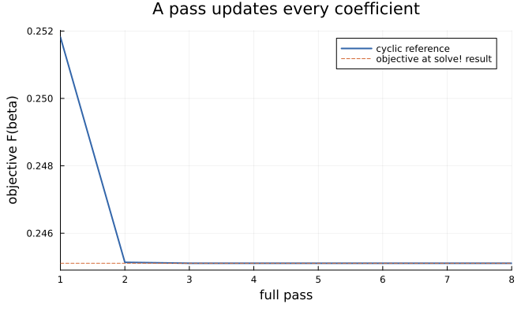

Coordinate descent
Prerequisites: the lasso KKT conditions and soft-thresholding.
After this chapter you can:
- Derive a one-coordinate lasso update.
- Maintain a residual without recomputing every prediction after each update.
- Compare a transparent cyclic reference with the package solver.
Coordinate descent (CD)
CD updates one coefficient at a time while holding the rest fixed, using a scalar soft-thresholding update for the lasso. It repeats sweeps (passes) over coordinates, sometimes focusing on the nonzero ones. It is a natural starting point for lasso and supports either a dense coefficient vector or a one-dimensional ProximalBase SparseIterate. For a group lasso, CD updates one whole group of coefficients at a time on a ProximalBase BlockIterate; see Choosing a solver.
using ProximalBase, ProximalSolvers
X = [1.0 0.0; 0.0 2.0; 0.0 0.0]
y = [2.0, -2.0, 0.5]
f = (1 / length(y)) * LeastSquaresLoss(y, X)
penalty = NormL1(1.0)
beta = zeros(2)
result = solve!(beta, f, penalty, CDSolver(order=:cyclic, momentum=false))
@assert isapprox(beta, [0.0, -0.25]; atol=1e-7)
beta2-element Vector{Float64}:
0.0
-0.25Solve one coordinate exactly
Hold all coefficients except beta[j] fixed. Let X_j be column j and r_j = y - sum(X_l*beta[l] for l != j) the residual excluding that coordinate. The one-dimensional objective, after dropping constants, is
\[\frac{a_j}{2}b^2-q_jb+\lambda|b|,\qquad a_j=s\|X_j\|_2^2,\quad q_j=sX_j^\mathsf{T}r_j.\]
For a_j > 0, completing the square or applying the subgradient condition gives
\[\beta_j^+=\frac{\operatorname{soft}(q_j,\lambda)}{a_j}.\]
This formula works for unequal column norms. A formula without the denominator implicitly assumes a particular standardization. If a column is zero and lambda > 0, setting that coefficient to zero minimizes its penalty. For lambda = 0 a zero column leaves that coefficient unidentified; zero is still one possible minimizer. The coordinate approach is developed in Friedman, Hastie and Tibshirani, Section 2.
Keep a residual cache
Let r = y-X*beta before visiting coordinate j. Then r_j = r + X_j*beta[j], and after a change delta = new_beta-beta[j], update r -= X_j*delta. The update touches one column, avoiding a full matrix-vector product for every visit. The reference below recomputes the residual only for its displayed objective, giving an additional check on what the cache represents.
using LinearAlgebra, Random, ProximalBase, ProximalSolvers, Plots
function textbook_cd(X, y, s, lambda; passes=50)
beta = zeros(size(X, 2)); residual = copy(y); objectives = Float64[]
for _ in 1:passes
for j in axes(X, 2)
column = view(X, :, j); curvature = s * sum(abs2, column)
correlation = s * dot(column, residual) + curvature * beta[j]
new_beta = iszero(curvature) ? 0.0 :
sign(correlation) * max(abs(correlation) - lambda, 0.0) / curvature
residual .-= column .* (new_beta - beta[j])
beta[j] = new_beta
end
push!(objectives, s * sum(abs2, y-X*beta) / 2 + lambda * sum(abs, beta))
end
beta, objectives
end
rng = Xoshiro(14)
X = randn(rng, 60, 12)
y = X[:, 1:3] * [1.5, -1.0, 0.5] + 0.2 * randn(rng, 60)
s, lambda = 1 / length(y), 0.08
reference_beta, pass_objectives = textbook_cd(X, y, s, lambda)
beta = zeros(size(X, 2))
result = solve!(beta, s * LeastSquaresLoss(y, X), NormL1(lambda),
CDSolver(order=:cyclic, momentum=false, relative=false, tol=1e-10))
@assert isapprox(beta, reference_beta; atol=1e-6)
gradient = s * X' * (X * beta - y)
kkt = maximum(iszero(beta[j]) ? max(abs(gradient[j]) - lambda, 0.0) :
abs(gradient[j] + lambda * sign(beta[j])) for j in eachindex(beta))
@assert kkt < 1e-6
(; coefficient_difference=maximum(abs, beta-reference_beta), kkt,
converged=result.converged)(coefficient_difference = 1.6431300764452317e-14, kkt = 1.5432100042289676e-14, converged = true)pass_plot = plot(1:length(pass_objectives), pass_objectives;
label="cyclic reference", linewidth=2, color="#3366aa",
xlabel="full pass", ylabel="objective F(beta)",
title="A pass updates every coefficient", xlims=(1, 8), size=(660, 400))
hline!(pass_plot, [s * sum(abs2, y-X*beta)/2 + lambda*sum(abs, beta)];
label="objective at solve! result", linestyle=:dash, color="#d46b38")
savefig(pass_plot, "cd-objective.svg")
The figure shows the first eight of the reference method's 50 passes. The horizontal line uses the objective recomputed from the package's returned coefficients; the independent KKT check above assesses that returned point.
Orders, active passes and groups
The mathematical update leaves the coordinate order open. Cyclic order makes one deterministic sweep; random order changes which coordinates see the latest updates first. When a sparse solution is emerging, focusing some work on currently active coordinates can be useful, but a method must still revisit inactive coordinates before concluding that no other variable should enter. The precise schedules and change test of CDSolver are defined in the scalar CD contract; the reference above simply makes full cyclic passes. Its pass count is not a performance-equivalent unit for all algorithms.
With a group penalty, the smooth block Hessian is s*X_g'*X_g. Choose ell_g >= opnorm(X_g)^2 and majorize that Hessian by s*ell_g*I. A proximal step for this quadratic surrogate applies block soft-thresholding with threshold lambda/(s*ell_g). It need not be the exact minimizer of the original block subproblem. See the group-step contract and the group-lasso example.
The storage strategy is separate from the objective. A sparse iterate can store active coefficients while the design matrix is dense. Its commit and failure rules are specified in the sparse-iterate contract.
Exercises
- Derive the update for orthogonal columns and use it to verify the first two-coefficient example.
- Explain why changing
beta[j]bydeltaupdates the residual by-X[:,j]*delta. - Coding: change the reference coordinate order to reverse order. Compare the first two passes, the final objective and an independent KKT residual with a
solve!fit of the same objective. - Coding: replace the cached residual after every pass by
y-X*betaand record its difference from the cache. Explain which mathematical identity this checks without assuming that a small difference proves optimality.
Exercise answers
- Each coefficient solves its own scalar problem. For the first example,
a = [1/3,4/3]andq = [2/3,-4/3]; atlambda=1the result is[0,-1/4]. - Only that column's contribution to
X*betachanges. The response is fixed, so the residual changes with the opposite sign. - Intermediate paths generally differ because each update uses the current residual. Compare final objectives and KKT conditions, not identical paths.
- The identity is
residual = y-X*beta. It tests cache consistency; an exactly consistent residual can still belong to a poor coefficient vector.
Continue to duality and certificates.